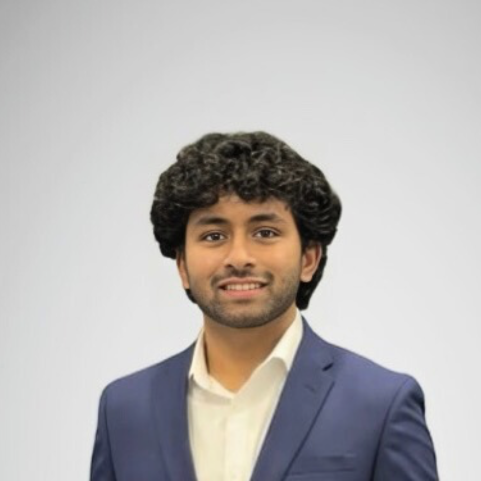

Vishnu
Intro: I’m a junior at UW–Madison majoring in Computer Science, Data Science, and Information Science. I’m interested in how technology shapes everyday life, especially how algorithms and data systems affect real people. I took LIS 500 to better understand the social impact of the systems I help build.
Background & interests: Outside of class I like building side projects, playing guitar, going to the gym, reading, and cooking. As someone who wants to work in tech long term, I think it’s important to not just know how to code, but also to think about power, bias, and responsibility.
Learning goals for LIS 500: Understand how bias shows up in data systems, connect course ideas to real-world tech impacts, and learn how to design more responsible tools.
Favorite tech & inspiration: I’m fascinated by modern AI tools and their power to generate text and automate tasks. A tech figure who inspires me is Tim Berners‑Lee for his idea that the web should be open and accessible to everyone.
IAT reflection: I took the race IAT. It felt like a fast-paced sorting game and made me think about how quickly our brains make associations, even when we are not fully aware of them.
Intersectionality: People’s experiences are shaped by overlapping identities (race, gender, class, and more). The readings and IAT helped me see that bias isn’t just about one category at a time.